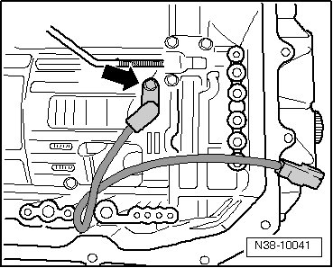

Transmission Speed Sensor: Service and Repair
Transmission Output Speed Sensor
Removing
- Remove valve body. Refer to --> [ Valve Body ] Removal and Replacement.
- Remove the bolt - arrow - from the transmission output speed (RPM) sensor (G195).

- Remove the sensor from the transmission.
Installing
- Press sensor into transmission until stop.
- The transmission output speed (RPM) sensor (G195) must be tightened to 10 Nm.
- Install valve body. Refer to --> [ Valve Body ] Removal and Replacement.